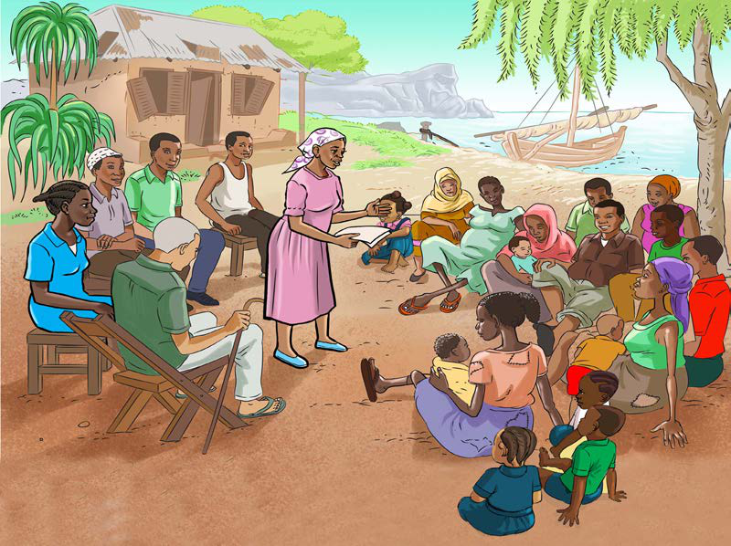

Kulinda, kuhifadhi na kudumisha uhuru na umoja wa kitaifa
Umoja wa kitaifa ndiyo nguzo ya mshikamano wa kindugu baina ya wanajamii.Umoja huu hutafsiriwa katika namna ambayo watu huungana na kushirikiana katika mambo ya kiitikadi, kiimani na kiutamaduni.Watu wenye kukubaliana katika itikadi, imani na utamaduni ni rahisi kuwa na umoja kijamii na kitaifa.Umoja wa kitaifa huweka mazingira salama ya watu kuhusiana na kushirikiana katika kazi ambazo ndiyo msingi wa maendeleo ya jamii na Taifa.Ukosefu wa umoja wa kitaifa, huondoa amani na huleta ugomvi, migogoro na mpasuko.Hivyo, ni wajibu wa watoto kulinda, kuhifadhi na kudumisha uhuru na umoja wa kitaifa na katika jamii inayomzunguka.